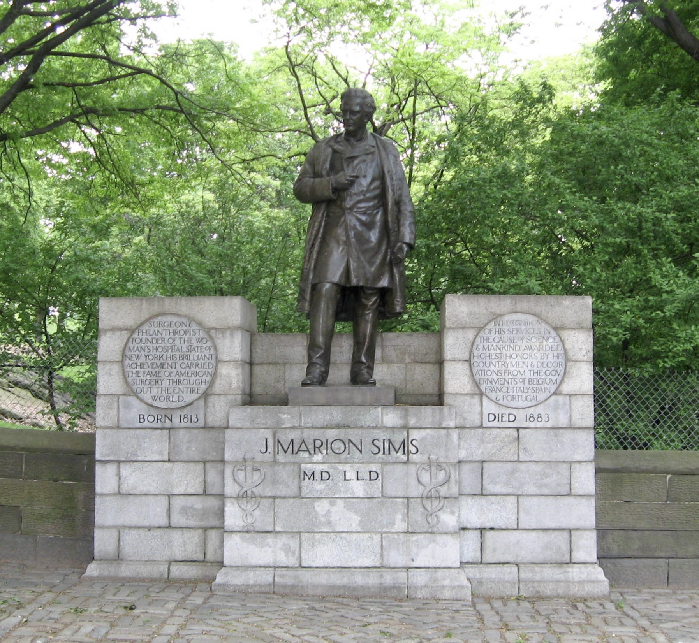
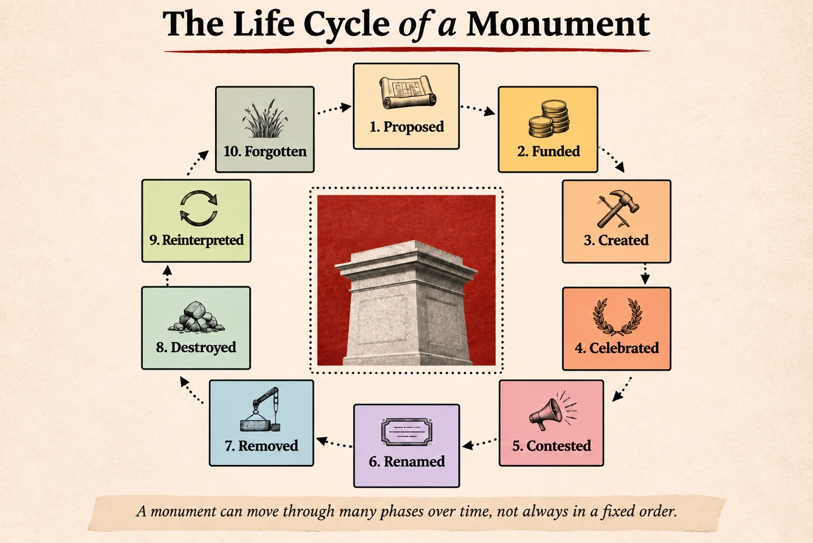

Choose a Monument and Explore Its Phases

Sources & References
The following sources were used to research the histories, public responses, and changing meanings of the monuments featured in this project.
Exploring the Life Cycle of Monuments and Public Memory
I chose the title “Who Put You Here?” because I believe it is one of the many questions that might cross someone's mind when encountering a monument in a public space, especially one they did not know existed. The question itself can carry different meanings depending on the emotions and intentions behind it. It can be asked negatively, expressing disagreement with who or what the monument represents, or questioning why it was created or placed in that particular location. On the other hand, it can also be asked positively, expressing curiosity, appreciation, or even excitement at unexpectedly discovering a monument that represents something meaningful to the viewer. Although the question may come across as provocative, that is part of the reason I chose it. I want to highlight the emotions and immediate reactions people experience when encountering monuments, even before knowing their history or purpose. The title encourages viewers to think beyond the monument's physical presence and question who made the decision to place it there, why it exists, and what its presence means to different people.
The Life Cycle explores the life cycle of 10 monuments and memorials, examining how societies decide what they want to remember, celebrate, or forget publicly. Through this project, I investigate the history and purpose behind each monument, including who proposed it, who funded it, why it was built, and how the public has responded to it over time.
The project examines five categories: Official vs. DIY, Removed vs. Reinterpreted, Celebrated vs. Controversial, Destroyed vs. Still present, and Remembered vs. Forgotten. Each category features two contrasting monuments, although some may fall into more than one category. By exploring these differences, the project considers how monuments created through official channels compare with those created by communities, and how their meanings and public perceptions change over time.
Through an interactive diagram, visitors can select a monument and explore the different phases of its life cycle, from its proposal and funding to its celebration, controversy, removal, or reinterpretation. Rather than following a linear narrative, visitors can choose which phases to explore and compare how each has shaped a monument's public meaning and significance.
Ultimately, The Life Cycle encourages visitors to consider who has the power to decide what should be memorialized in public spaces and how those decisions reflect the values of society.


The following sources were used to research the histories, public responses, and changing meanings of the monuments featured in this project.